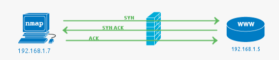
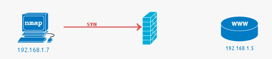
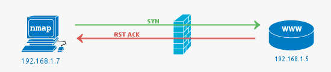
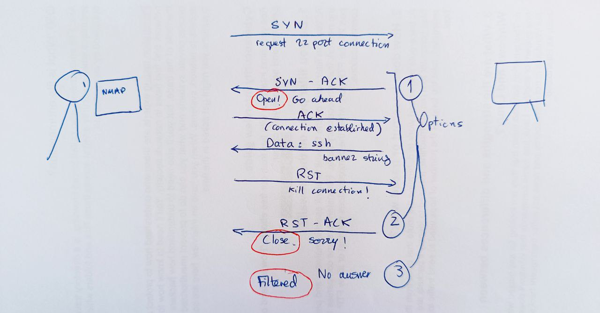
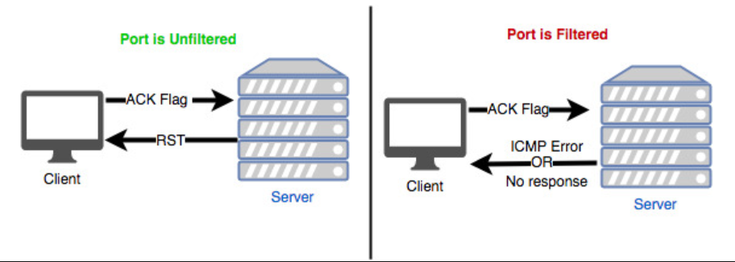
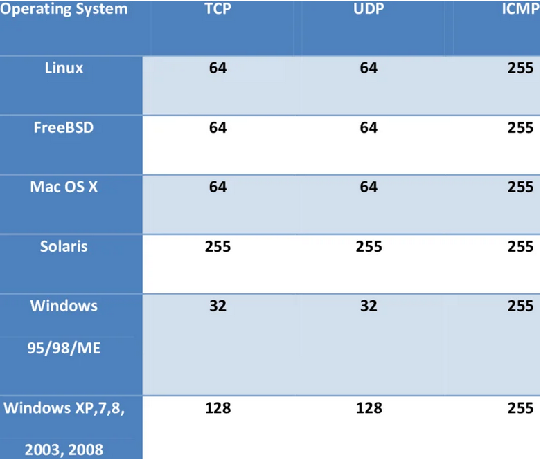

nmap - A network exploration and security auditing tool
Sources of this notes
- HackTheBox Academy: Network enumeration with nmap
- nmap documentation.
Description
Network Mapper is an open source tool for network exploration and security auditing. Free and open-source scanner created by Gordon Lyon. Nmap is used to discover hosts and services on a computer network by sending packages and analyzing the responses. Another discovery feature is that of operating system detection. These features are extensible by scripts that provide more advanced service detection.
Worthwhile for understanding how packages are sent and received is the --packet-trace option. Also --reason displays the reason for specific result.
Also, Nmap does not always recognize all information by default. Sometimes you can use netcat to interpelate a service:
Cheat Sheet
By default, Nmap will conduct a TCP scan unless specifically requested to perform a UDP scan.
To redirect results to a file > targetfile.txt
Search and run a script in nmap
NSE: Nmap Scripting Engine.
Run a script:
NSE (Nmap Script Engine) provides us with the possibility to create scripts in Lua for interaction with certain services. There are a total of 14 categories into which these scripts can be divided:
| Category | Description |
|---|---|
auth |
Determination of authentication credentials. |
broadcast |
Scripts, which are used for host discovery by broadcasting and the discovered hosts, can be automatically added to the remaining scans. |
brute |
Executes scripts that try to log in to the respective service by brute-forcing with credentials. |
default |
Default scripts executed by using the -sC option. Syntax: sudo nmap $ip -sC |
discovery |
Evaluation of accessible services. |
dos |
These scripts are used to check services for denial of service vulnerabilities and are used less as it harms the services. |
exploit |
This category of scripts tries to exploit known vulnerabilities for the scanned port. |
external |
Scripts that use external services for further processing. |
fuzzer |
This uses scripts to identify vulnerabilities and unexpected packet handling by sending different fields, which can take much time. |
intrusive |
Intrusive scripts that could negatively affect the target system. |
malware |
Checks if some malware infects the target system. |
safe |
Defensive scripts that do not perform intrusive and destructive access. |
version |
Extension for service detection. |
vuln |
Identification of specific vulnerabilities. |
General vulnerability assessment
Port 21: footprinting FTP
Port 22: attack a ssh connection
Ports 137, 138, 139, 445: footprinting SMB
Grab banners of services
Enumerate samba service (smb)
Performance
Introducing delays or Timeouts
When Nmap sends a packet, it takes some time (Round-Trip-Time - RTT) to receive a response from the scanned port. Generally, Nmap starts with a high timeout (--min-RTT-timeout) of 100ms.
Max Retries
The default value for the retry rate is 10, so if Nmap does not receive a response for a port, it will not send any more packets to the port and will be skipped.
Rates
When setting the minimum rate (--min-rate) for sending packets, we tell Nmap to simultaneously send the specified number of packets.
Timing
Nmap offers six different timing templates (-T <0-5>), being defaul one, -T 3.
| Flag | Mode |
|---|---|
| -T 0 | Paranoid |
| -T 1 | Sneaky |
| -T 2 | Polite |
| -T 3 | Normal |
| -T 4 | Aggressive |
| -T 5 | Insane |
More on nmap documentation.
Firewall and IDS/IPS Evasion with nmap
An adversary uses TCP ACK segments to gather information about firewall or ACL configuration. The purpose of this type of scan is to discover information about filter configurations rather than port state.
-
An adversary sends TCP packets with the ACK flag set and a sequence number of zero (which means that are not associated with an existing connection to target ports).
-
An adversary uses the response from the target to determine the port's state.
- Filtered port: The target ignores the packets, and dropped them. No response is returned or ICMP error codes.
- Unfiltered port: The target rejects the packets and returned an RST flag and different types of ICMP error codes (or none at all): Net Unreachable, Net Prohibited, Host Unreachable, Host Prohibited, Port Unreachable. If a RST packet is received the target port is either closed or the ACK was sent out-of-sync.
Unlike outgoing connections, all connection attempts (with the SYN flag) from external networks are usually blocked by firewalls. However, the packets with the ACK flag are often passed by the firewall because the firewall cannot determine whether the connection was first established from the external network or the internal network.
Detect a WAF
Decoys
There are cases in which administrators block specific subnets from different regions in principle. Decoys can be used for SYN, ACK, ICMP scans, and OS detection scans.
With the Decoy scanning method (-D), Nmap generates various random IP addresses inserted into the IP header to disguise the origin of the packet sent.
Manually specify IP address (-S) for getting to services only accessible from individual subnets:
DNS proxying
The DNS queries are made over the UDP port 53. The TCP port 53 was previously only used for the so-called "Zone transfers" between the DNS servers or data transfer larger than 512 bytes. More and more, this is changing due to IPv6 and DNSSEC expansions. These changes cause many DNS requests to be made via TCP port 53.
Bypassing demilitarized zone (DMZ) by specifying DNS servers ourselves (we can use the company's DNS server).
--dns-server <ns>,<ns>
We can also use TCP port 53 as a source port (--source-port) for our scans. If the administrator uses the firewall to control this port and does not filter IDS/IPS properly, our TCP packets will be trusted and passed through.
Example:
Following the example, a possible exploitation for this weak configuration would be:
UDP scans not working on VPN connections
Explanation from https://www.reddit.com/r/nmap/comments/u08lud/havin_a_rough_go_of_trying_to_scan_a_subnet_with/:
As others have pointed out, scanning over a VPN link means you are limited to internet-layer interactions and operations. The "V" in VPN stands for Virtual, and means that you are not actually on the same link as the other hosts in your subnet, so you can't get information about their link-layer connections any more than they can know whether you've connected to the VPN via Starbucks WiFi, an Ethernet cable, or a dial-up modem.
You are further limited by the fact that Windows does not offer a general-purpose raw socket interface, so Nmap can't craft special packets at the network/internet layer. Usually we work around this by crafting Ethernet (link-layer) frames and injecting those with Npcap, but VPN links do not use Ethernet frames, so that method doesn't work. We hope to be able to add this functionality in the future, but for now, VPNs are tricky to use with Npcap, and we haven't implemented PPTP or other VPN framing in Nmap to make it work. You can still do TCP Connect scanning (
-sT), run most NSE scripts (-sCor--script), and do service version detection (-sV), but things like TCP SYN scan (-sS), UDP scanning (-sU), OS detection (-O), and traceroute (--traceroute) will not work.
How nmap works
Ports
Open port:
 This indicates that the connection to the scanned port has been established. These connections can be TCP connections, UDP datagrams as well as SCTP associations.
Filtered port:
 Nmap cannot correctly identify whether the scanned port is open or closed because either no response is returned from the target for the port or we get an error code from the target.
Close port:

When the port is shown as closed, the TCP protocol indicates that the packet we received back contains an RST flag. This scanning method can also be used to determine if our target is alive or not.
Unfiltered port:
This state of a port only occurs during the TCP-ACK scan and means that the port is accessible, but it cannot be determined whether it is open or closed.
**open|filtered ** port:
If we do not get a response for a specific port, Nmap will set it to that state. This indicates that a firewall or packet filter may protect the port.
closed|filtered port:
This state only occurs in the IP ID idle scans and indicates that it was impossible to determine if the scanned port is closed or filtered by a firewall.
Probes for HOST discovery
List of the most filtered ports: 80, 25, 22, 443, 21, 113, 23, 53, 554, 3389, 1723. These are valuable ping ports.
Scans
-sS (or TCP SYN scan)
By default, Nmap scans the top 1000 TCP ports with the SYN scan (-sS). This SYN scan is set only to default when we run it as root because of the socket permissions required to create raw TCP packets. Therefore, by default, Nmap performs a SYN Scan, though it substitutes a connect scan if the user does not have proper privileges to send raw packets (requires root access on Unix). Unprivileged users can only execute connect and FTP bounce scans.
- If our target sends an
SYN-ACKflagged packet back to the scanned port, Nmap detects that the port isopen. - If the packet receives an
RSTflag, it is an indicator that the port isclosed. - If Nmap does not receive a packet back, it will display it as
filtered. Depending on the firewall configuration, certain packets may be dropped or ignored by the firewall.

- No connection established, but we got our response.
- Technique referred as half-open scanning, because you don't open a full TCP connection.
-sT (or TCP Connect scan)
TCP connect scan is the default TCP scan type when SYN scan is not an option (when not running with privileges). The Nmap TCP Connect Scan (-sT) uses the TCP three-way handshake to determine if a specific port on a target host is open or closed. The scan sends an SYN packet to the target port and waits for a response. It is considered open if the target port responds with an SYN-ACK packet and closed if it responds with an RST packet.

-sN (A NULL scan)
In the SYN message that nmap sends, TCP flag header is set to 0.
If the response is:
- none: the port is open or filtered.
- RST: the port is closed.
- A response saying that it couldn't reach destiny, the port is filtered.
-sA (ACK scan)
Returns if the port is filtered or not. It's useful to detect a firewall. Filtered ports reveals the existence of some kind of firewall.

A variation of the TCP ACK scan is the TCP Windows scan.
-sW (TCP Windows scan)
It also sends an ACK packet. In the response we pay attention to the Windows size of the TCP header_
- If the windows size is different from 0, the port is open.
- If the windows size is 0, the port is either close or filtered.
How To Identify Operating System Using TTL Value And Ping Command
After running:
We can get:
You can quickly detect whether a system is running with Linux, or Windows or any other OS by looking at the TTL value from the output of the ping command. You don't need any extra applications to detect a remote system's OS. The default initial TTL value for Linux/Unix is 64, and TTL value for Windows is 128.

Saving the results
With the XML output, we can easily create HTML reports. To convert the stored results from XML format to HTML, we can use the tool xsltproc.
Quick techniques
Host Enumeration: Determining if host is alive with ARP ping
It can be done with -packet-trace or with --reason.
To disable ARP requests and scan our target with the desired ICMP echo requests, we can disable ARP pings by setting the "--disable-arp-ping" option.
Port scanning: having a clear view of a SYN scan on a port
To have a clear view of the SYN scan on port 21, disable the ICMP echo requests (-Pn), DNS resolution (-n), and ARP ping scan (--disable-arp-ping).
Performing a FTP bounce attack
An FTP bounce attack is a network attack that uses FTP servers to deliver outbound traffic to another device on the network. For instance, consider we are targetting an FTP Server FTP_DMZ exposed to the internet. Another device within the same network, Internal_DMZ, is not exposed to the internet. We can use the connection to the FTP_DMZ server to scan Internal_DMZ using the FTP Bounce attack and obtain information about the server's open ports.